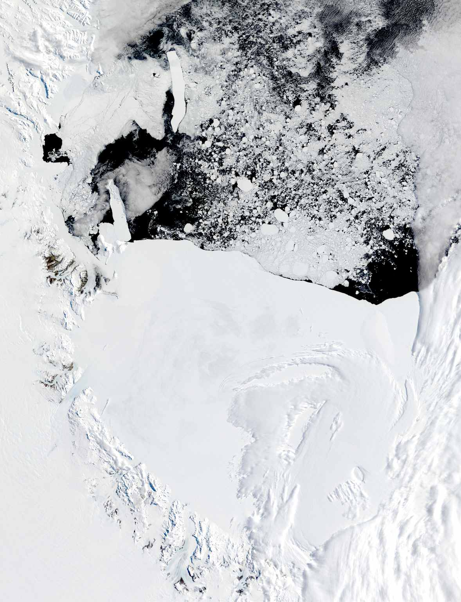

Frozen Legacies
Investigating Four Decades of Change Beneath Antarctica’s Ross Ice Shelf

Investigating Four Decades of Change Beneath Antarctica’s Ross Ice Shelf
Frozen Legacies brings together newly digitized radar film from historic 1970s Antarctic flights and today’s advanced airborne surveys to reveal how the Ross Ice Shelf has changed over nearly 50 years. By peering beneath the ice with radar, our team is uncovering the story of Antarctica’s largest ice shelf—helping scientists, educators, and the public understand the frozen frontier’s past, present, and future.
First direct measurements of basal melt rates beneath the Ross Ice Shelf.
Digitizing and analyzing 1970s radar data for new discoveries.
Engaging students and educators in real polar research.
Researchers from Georgia Tech, Stanford, and Mines working together.